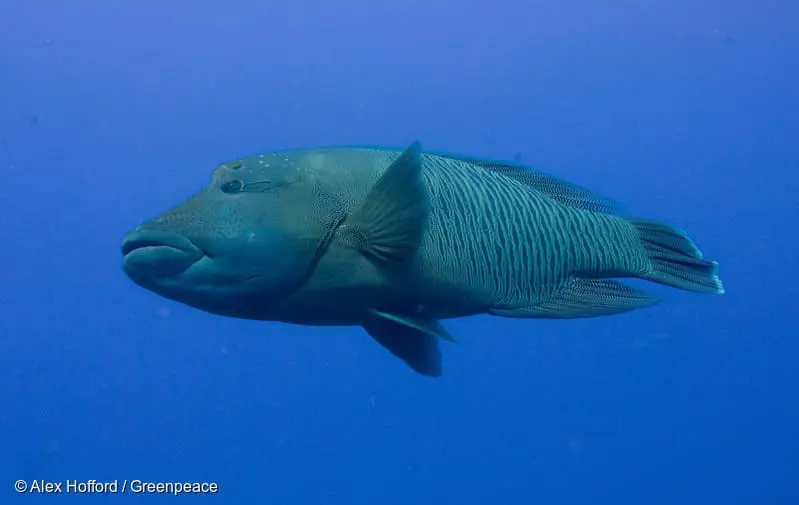

Penyu adalah hewan yang banyak ditemukan bertelur di beberapa
pesisir pantai di Indonesia sejak dulu.
Paus bungkuk adalah hewan terancam punah yang tinggal di laut dalam.
Hiu adalah ikan laut yang hampir punah.

Ikan langka yang termasuk dalam kerabat ikan kakatua ini
hanya bisa ditemukan di Samudra Hindia dan Samudra Pasifik.